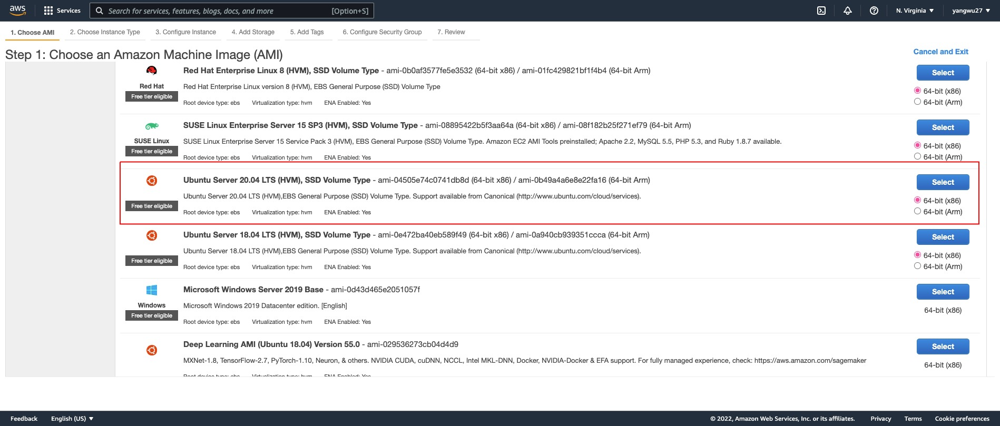
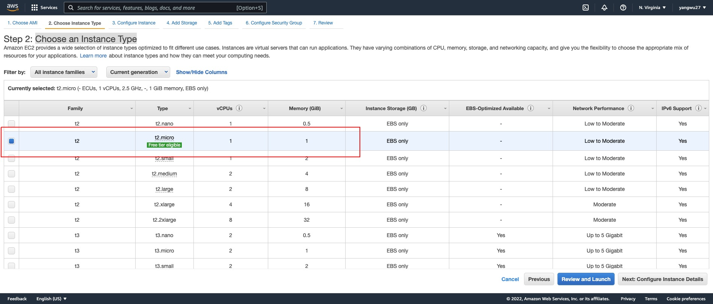
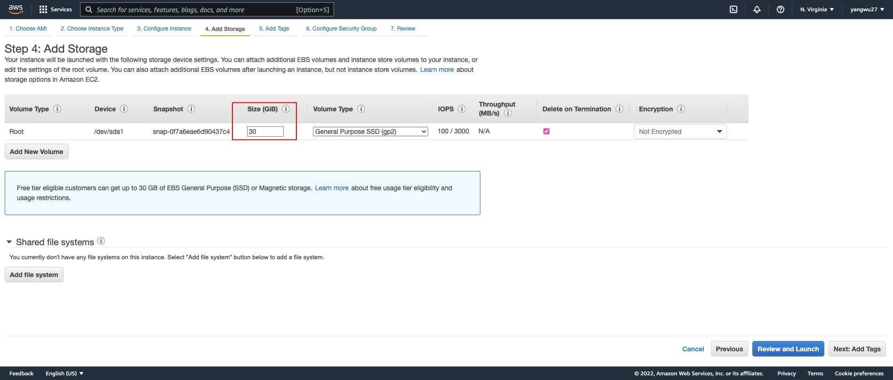
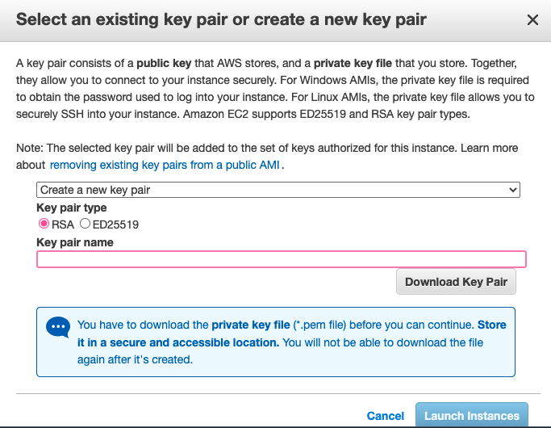
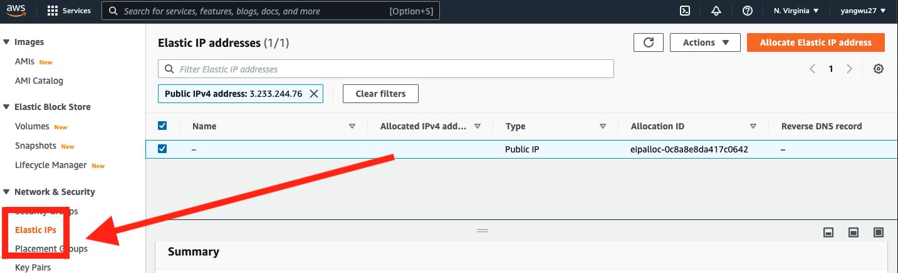
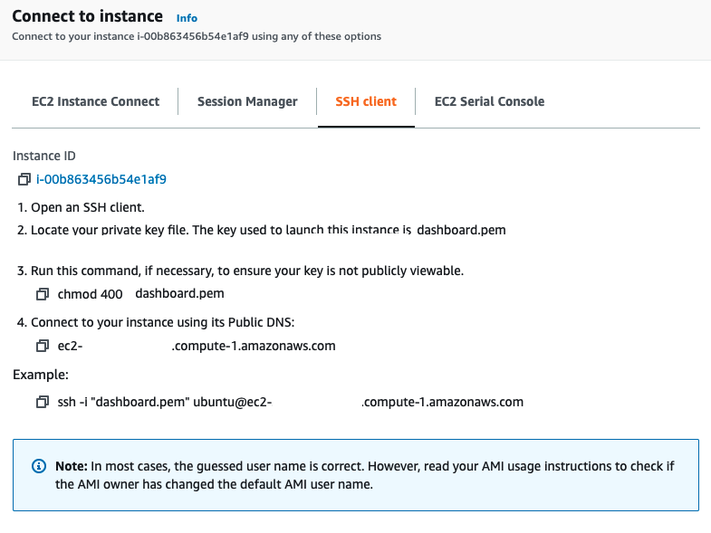
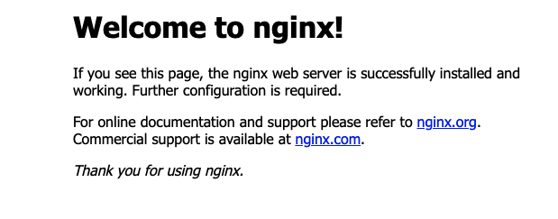

In a previous post, I documented the steps for deploying shiny applications or interactive documents through shiny-server, rstudio-server, and AWS EC2. This post documents the steps for deploying apps and interactive documents using Docker, ShinyProxy, and AWS EC2. Note again that I am a MAC user, which means I’ll be using the Terminal app initially for the EC2 set up.
If you are a VS Code or Visual Studio user like myself, you could follow this Youtube video or Microsoft’s official documentation to set up remote SSH, which allows you to open a remote folder on any remote machine, virtual machine, or container with a running SSH server.
If you are working for an organization that uses AWS EC2, the chances are that your data team or IT department may already have an EC2 instance running. In that case, consult your cloud manager or supervisor or whoever manages your organization’s AWS account regarding the following:
The root user could create your IAM user account, which gives you certain access rights.
You would need to connect to EC2 via a Secure Shell (SSH) using a Command Line Interface (CLI), and so you need to obtain the AWS EC2 .pem private key file.
You may also want to obtain the SSH commands that allows you to SSH into your organization’s EC2 instance.
The rest of the setup steps may differ quite a bit depending on whether or not you are using your organization’s EC2 instance or running your own. For the purpose of this post, however, we will create our own personal AWS account and EC2 instance. The first step, though, is to register for an AWS account, which is free of charge.
Launch an EC2 instance by selecting an Amazon AMI.

Because many tutorials and resources online are based on Ubuntu, we will use the Ubuntu AMI. The steps that follow should work with Amazon Linux 2; however, because Amazon Linux 2 is based on Red Hat Enterprise Linux (RHEL), some of the commands will be different.
We will choose t2.micro, which is free tier eligible. Depending on your needs for computing resources (for instance, building docker images with R packages that contain complied code), you may run out of memory with 1 GiB of Memory and 1 vCPUs, so you could also consider other instance types. I recommend reading the following article to better understand the differences between instance types.

We could leave this as default.
The default EBS volume size is 8 GB but we get up to 30 GB of General Purpose SSD via the free tier. See the documentation on EBS volume options.

Security groups function as virtual firewalls for our EC2 instances to control inbound and outbound traffic. By default, AWS blocks traffic from all ports except for port 22, which is the port we use to SSH into our instance. We need the following ports:
| Type | Protocol | Port Range | Source | Description |
|---|---|---|---|---|
| SSH | TCP | 22 | Anywhere: 0.0.0.0/0, ::0 | SSH |
| HTTP | TCP | 80 | Anywhere: 0.0.0.0/0, ::0 | HTTP |
| HTTPS | TCP | 443 | Anywhere: 0.0.0.0/0, ::0 | HTTPS |
| Custom TCP | TCP | 3838 | Anywhere: 0.0.0.0/0, ::0 | Default Shiny server |
| Custom TCP | TCP | 2375 | Anywhere: 0.0.0.0/0, ::0 | ShinyProxy Connection With Docker Daemon |
| Custom TCP | TCP | 8080 | Anywhere: 0.0.0.0/0, ::0 | Default ShinyProxy |
Since our instance is utilized as a web server, we use security rules to allow IP addresses to access our instance using HTTP or Custom TCP so that external users can browse the content on our web server.
The last step for setting up an EC2 instance is creating our .pem private key file, or select to use an existing key file provided by your organization.

Finally, launch our instance.
An elastic IP address is different than our EC2 instance’s Public IPv4 address; in short, an Elastic IP address is allocated to our AWS account, and is ours until we release it. Therefore, this IP address can be reused for our EC2 instances. The re-usability of our IP may be useful when we want to upgrade or downgrade our EC2 instance type. Without an elastic IP address, a new Public IPv4 address will be used each time we stop and re-launch our instance. This means that any service that depends on our public IP will need to be updated. The benefit of an elastic IP address is that we can simply associate it to the new server. In other words, the elastic IP address allows us to mask the failure of an instance or software by rapidly remapping the address to a new instance in our account. The setup is as follows:

Select the Action drop down menu in the top right corner and choose Associate Elastic IP address. From now on, every time we make changes to our EC2 instance, we can simply re-associate this IP address to our new instance. Note: if we stop our EC2 instance, our elastic IP address will no longer be associated with an EC2 instance and charges will start accruing.
To connect to our EC2 instance via SSH, we will use the terminal (for windows, the steps for PuTTY can be found here). When we select “Connect” in our AWS console, we should be taken to the following page:

.pem key:# Change working directory
# This should be a path to the folder containing your .pem key
$ cd path_to_pem_file$ chmod 400 file.pem$ ssh -i "file.pem" ubuntu@ec2-public-ip-address.compute-1.amazonaws.comAre you sure you want to continue connecting (yes/no/[fingerprint])? prompt. Entering yes should successfully connect you to you EC2 instance:Welcome to Ubuntu 20.04.3 LTS (GNU/Linux 5.11.0-1022-aws x86_64)
* Documentation: https://help.ubuntu.com
* Management: https://landscape.canonical.com
* Support: https://ubuntu.com/advantage
System information as of Sat Jan 29 01:27:58 UTC 2022
System load: 0.0 Processes: 100
Usage of /: 4.9% of 29.02GB Users logged in: 0
Memory usage: 21% IPv4 address for eth0: 172.31.91.243
Swap usage: 0%
1 update can be applied immediately.
To see these additional updates run: apt list --upgradableTo disconnect from our instance:
$ exitIn VSCode, simple cmd + shift + P choose Remote: Close Remote Connection.
I followed the instructions in the official Docker documentation.
# Update command
$ sudo apt-get update
# Install packages to allow apt to use a repository over HTTPS:
$ sudo apt-get install \
ca-certificates \
curl \
gnupg \
lsb-release
# Add Docker’s official GPG key
$ sudo mkdir -p /etc/apt/keyrings
$ curl -fsSL https://download.docker.com/linux/ubuntu/gpg | sudo gpg --dearmor -o /etc/apt/keyrings/docker.gpg
# Set up the docker repository
$ echo \
"deb [arch=$(dpkg --print-architecture) signed-by=/etc/apt/keyrings/docker.gpg] https://download.docker.com/linux/ubuntu \
$(lsb_release -cs) stable" | sudo tee /etc/apt/sources.list.d/docker.list > /dev/null
# Install
$ sudo apt-get install docker-ce docker-ce-cli
# Verify installation
$ sudo docker run hello-world The difference between apt-get and apt is that the former is an older command with more options while apt is a newer, more user-friendly command with fewer options.
The installation steps can be found in this post.
# Update
$ sudo yum update
$ sudo yum install docker
# Check status
$ sudo systemctl status docker According to the official documentation, ShinyProxy needs to connect to the docker daemon to spin up the containers for the Shiny apps. By default ShinyProxy will do so on port 2375 of the docker host (our EC2 instance). In order to allow for connections on port 2375, the docker startup options need to be edited.
# Update
$ mkdir /etc/systemd/system/docker.service.d
$ touch /etc/systemd/system/docker.service.d/override.conf# Update
$ sudo service docker restartFor both, add the variables:
# sudo nano /etc/systemd/system/docker.service.d/override.conf
[Service]
ExecStart=
ExecStart=/usr/bin/dockerd -H unix:// -D -H tcp://127.0.0.1:2375$ sudo service docker status
$ sudo service docker start
$ sudo service docker stop
$ sudo service docker restart
$ sudo docker version
# List docker images
$ sudo docker image ls
# Remove docker images with '-f' force remove option
$ sudo docker image rm -f image_id$ sudo systemctl enable docker.service
$ sudo systemctl status docker.service
$ sudo systemctl start docker.service
$ sudo systemctl stop docker.service
$ sudo systemctl restart docker.service
$ sudo docker version
# List docker images
$ sudo docker image ls
# Remove docker images with '-f' force remove option
$ sudo docker image rm -f image_id We need to use nginx to set up a reverse proxy; the reason by this is explained in my previous post.
$ sudo apt-get install nginx
$ nginx -v$ sudo amazon-linux-extras list | grep epel
$ sudo amazon-linux-extras enable epel
$ sudo yum install epel-release
$ sudo yum install nginx
$ sudo nginx -v If nginx is installed successfully, you should see the following page by entering your Public IPv4 address (obtained from Instance summary in your AWS console) into your web browser:

The nginx configuration files are located in the etc (system configuration files) directory:
$ cd /etc/nginx
$ lsThe results of ls may differ, sometimes substantially, depending on the AMI (and the operating system) that we are using. For instance, on Ubuntu, the default installation of nginx might create a sites-avalable and a sites-enabled directory. On RedHat/CentOS/Fedora, the default installation of nginx does not include such directories. For those operating systems, the default place to store the configuration files is the following directory /etc/nginx/conf.d/*.conf. In addition to that, in the /etc/nginx/nginx.conf configuration file, we must ensure that the include /etc/nginx/conf.d/*.conf; directive is added in the http block to tell nginx to pull in any files in the /etc/nginx/conf.d directory that has the extension .conf.
/etc/nginx directory, we should see at least the following sub-directories (if not, we can create them):$ cd /etc/nginx
$ ls
conf.d sites-enabled nginx.conf sites-availablesites-available directory and create a new configuration file specifically for ShinyProxy. The ShinyProxy official documentation has an example configuration for nginx:$ cd sites-available
$ sudo nano shinyproxy.confshinyproxy.conf file:server {
listen 80;
# Enter our domain.com or subdomain.domain.com, keeping shinyproxy as a subdomain
server_name shinyproxy.ourdomain.com;
rewrite ^(.*) https://$server_name$1 permanent;
}
server {
listen 443;
# Enter our domain.com or subdomain.domain.com, keeping shinyproxy as a subdomain
server_name shinyproxy.ourdomain.com;
access_log /var/log/nginx/shinyproxy.access.log;
error_log /var/log/nginx/shinyproxy.error.log error;
ssl on;
ssl_protocols TLSv1 TLSv1.1 TLSv1.2;
# Enter the paths to your ssl certificate and key on your EC2
ssl_certificate /etc/ssl/certs/ourdomain.com.crt;
ssl_certificate_key /etc/ssl/private/ourdomain.com.key;
location / {
proxy_pass http://127.0.0.1:8080/;
proxy_http_version 1.1;
proxy_set_header Upgrade $http_upgrade;
proxy_set_header Connection "upgrade";
proxy_read_timeout 600s;
proxy_redirect off;
proxy_set_header Host $http_host;
proxy_set_header X-Real-IP $remote_addr;
proxy_set_header X-Forwarded-For $proxy_add_x_forwarded_for;
proxy_set_header X-Forwarded-Proto $scheme;
}
}When nginx proxies a request, it 1) sends the request (i.e., a client trying to access our shiny application or interactive document hosted on our EC2 instance) to a specified proxied server, 2) fetches the response, and 3) sends it back to the client. To understand the configuration above:
We would need to purchase our own domain, which is also explained in more details in the previous post. In particular, we need the following paths, substituting for ourdomain:
# ssl_certificate
$ /etc/letsencrypt/live/ourdomain.com/fullchain.pem
# ssl_certificate_key
$ /etc/letsencrypt/live/ourdomain.com/privkey.pemThe proxy_pass directive passes all requests processed in location / to the proxied server at the specified address http://127.0.0.1:8080/. See more details on this here. Note also that the “/” prefix is used for matching requests. The location block above provides the shortest prefix (length one), and only if all other location blocks fail to provide a match will this block be used. Since we do not have any other location blocks at the moment, this one will be used.
The proxy_http_version directive sets the HTTP protocol version for proxying. By default, version 1.0 is used. More details here.
The two proxy_set_header field value directives have something to do with WebSocket proxying. These headers have to be passed explicitly so that the proxied server can know the client’s intention to switch a protocol to WebSocket.
By default, the web socket connection will be closed if the proxied server does not transmit any data within 60 seconds. This timeout can be increased with the proxy_read_timeout directive. The configuration measure units can be found here.
Next, We need to create a shortcut (symbolic link) inside the sites-enabled directory. The reason is that nginx does not look at sites-available but only the sites-enabled directory in the /etc/nginx/nginx.conf configuration file. We create the .conf files inside sites-available and create a shortcut inside sites-enabled to access it. One benefit of this is that, to temporarily deactivate access to ShinyProxy, we only have to delete the shortcut but not the actual configuration file in sites-available:
$ cd /etc/nginx/sites-enabled
# Use absolute path
$ sudo ln -s /etc/nginx/sites-available/shinyproxy.conf /etc/nginx/sites-enabled/
# To remove a symbolic link
$ sudo rm your-site-config default configuration file located in the sites-available and sites-enabled directories. We must also remove them:$ cd /etc/nginx/sites-enabled
$ sudo rm default
$ cd /etc/nginx/sites-available
$ sudo rm default$ sudo nginx -tnginx: the configuration file /etc/nginx/nginx.conf syntax is ok
nginx: configuration file /etc/nginx/nginx.conf test is successfulnginx:$ sudo service nginx restartnginx configuration file above in the conf.d directory:$ cd /etc/nginx/conf.d
$ sudo nano shinyproxy.confshinyproxy.conf file:server {
listen 80;
...
}
server {
listen 443;
...
location / {
proxy_pass http://127.0.0.1:8080/;
...
}$ sudo systemctl restart nginx$ sudo service nginx status
$ sudo service nginx start
$ sudo service nginx stop
$ sudo service nginx restart$ sudo systemctl status nginx
$ sudo systemctl start nginx
$ sudo systemctl stop nginx
$ sudo systemctl restart nginx# Shinyproxy requires Java 8 (or higher)
$ sudo apt-get -y update
$ sudo apt-get -yq install \
default-jre \
default-jdk \
# Check version
$ java -version# Shinyproxy latest at the time of writing this post
$ export VERSION="2.6.1"
# Download and install
$ wget https://www.shinyproxy.io/downloads/shinyproxy_${VERSION}_amd64.deb
$ apt install ./shinyproxy_${VERSION}_amd64.deb
$ rm shinyproxy_${VERSION}_amd64.deb$ sudo yum install java-1.8.0-openjdk
$ sudo yum install java-11-amazon-corretto
$ java -version# Downloads RPM package file to current directory
$ sudo wget https://www.shinyproxy.io/downloads/shinyproxy_2.6.1_x86_64.rpm
$ sudo yum localinstall ./shinyproxy_2.6.1_x86_64.rpm
$ sudo rm ./shinyproxy_${VERSION}_amd64.deb
# Check installation
$ sudo systemctl status shinyproxy The server configuration for ShinyProxy is controlled by a file named application.yml. The location of this configuration file is the same for both Ubuntu and Amazon Linux 2:
# Downloads RPM package file to current directory
$ cd nano /etc/shinyproxy/application.ymlHere is an example of a configuration file:
proxy:
title: My Shiny Dashboards
landing-page: /
heartbeat-rate: 10000
heartbeat-timeout: 60000
port: 8080
authentication: simple
admin-groups: admin_user
users:
- name: user_1
password: password1
groups: admin_user
- name: user_2
password: password2
groups: shiny_user
docker:
url: http://localhost:2375
template-groups:
- id: viz
properties:
display-name: Visualization
- id: dash
properties:
display-name: Dashboard
logging:
file:
name: shinyproxy.logShinyProxy has a comprehensive documentation on the configuration file, including what each directive stands for. The following directives are the most important for a simple set-up:
The port directive uses port 8080, which we set up in the first step when creating our EC2 instance.
The authentication directive uses the default authentication offered by ShinyProxy, which allows us to define users and groups (which user has access to which applications). This is simple to use but may not be the most secure way to set up authentication. However, ShinyProxy integrates well with other authentication technologies and platforms. For instance, follow the comprehensive guide in this post to set up ShinyProxy with AWS Cognito.
The docker directive sets the url and port on which to connect to the docker daemon.
The template-groups optionally specifies a list of groups that is used to group apps in the template.
Finally, every single Shiny app served by ShinyProxy has its own configuration block under specs, which we have not added yet. We would add these once we’ve containerized our shiny applications in the next step.
Save the configuration file and restart ShinyProxy:
# Ubuntu
$ sudo service shinyproxy restart
# Amazon Linux 2
$ sudo systemctl restart shinyproxy We start with a directory app on our instance, perhaps as follows:
├── app
│ ├── global.R
│ ├── server.R
│ └── ui.R
├── .gitignore
├── Dockerfile
└── README.mdThe file of interest to us is Dockerfile, which allows us to build images automatically by reading the instructions it contains. A Dockerfile is a text document that contains all the commands a user could call on the command line to assemble an image. Using docker build, we can create an automated build that executes several command-line instructions in succession. Here is an example Dockerfile for a shiny application I’ve built:
###################################################
# Build from the official base R image with R 4.2 #
###################################################
FROM r-base:4.2.0
LABEL maintainer="Yang Wu <yangwu2020@gmail.com>"
###################################
# System libraries of general use #
###################################
# The /var/lib/apt/lists stores the package information cache, which can be removed after installations
RUN apt-get update && apt-get install --no-install-recommends -y \
libcurl4-gnutls-dev \
libcairo2-dev \
libssl-dev \
libxml2-dev \
libsodium-dev \
&& rm -rf /var/lib/apt/lists/*
#########################################
# Install dependencies of the dashboard #
#########################################
RUN install2.r --error --skipinstalled --ncpus -1 \
readr \
devtools \
cranlogs \
DBI
##################
# Github package #
##################
RUN installGithub.r YangWu1227/tracker-dashboard
####################################
# Copy the app source to the image #
####################################
RUN mkdir /root/app
COPY app /root/app
#################################################
# Container listens on the port 3838 at runtime #
#################################################
EXPOSE 3838
# 1) '-q' means don't print startup message and 2) '-e' means execute 'EXPR' and exit
CMD ["R", "-q", "-e", "shiny::runApp('/root/app', port = 3838, host = '0.0.0.0')"]The most important commands and steps are as follows:
The FROM instruction initializes a new build stage and sets the Base Image for subsequent instructions. The images that are of interest to R users can be found here. These images are built on Debian stable.
Our shiny applications may depend on other R packages, and so we need to install system libraries in the image. Ensuring all required system libraries are installed is sometimes an iterative process. For one, the CRAN pages for some R packages (particularly those maintained by Rstudio) list their ‘SystemRequirements’. Another approach is to add the missing dependencies on a trial-and-error basis; in other words, we install the required system libraries and packages listed in the the error messages when the build process inevitably fails due to missing dependencies.
The install2.r and installGithub.r R scripts are from the littler package, which I use to install R packages in the image.
We create a directory in the image RUN mkdir /root/app and copy our source code in the app directory (located in our EC2) to the /root/app directory (located in the image) using COPY app /root/app.
We EXPOSE 3838 so that the container listens on the port 3838 at runtime.
Finally, we run the source code of our shiny application in the /root/app directory in the image (and not in our EC2). This command is dependent on the source code of our shiny applications. For instance, if we used flexdashboard, then the command should be:
CMD ["R", "-q", "-e", "rmarkdown::run('/root/app/source_code.Rmd', shiny_args = list(port = 3838, host = '0.0.0.0'))"] Navigate to the app directory on our instance, which also contains the Dockerfile:
$ sudo docker build . -t TARGET_IMAGEA few notes:
The build command above uses the current directory (.) as build context.
The -t options allows use to tag our image with a name. For example, we can use sudo docker build . -t tracker-dashboard.
Once the build process completes, we can check the images using:
$ sudo docker image lsIf we need to delete an image:
$ sudo docker image rm -f image_id Lastly, we add the specs directives into our ShinyProxy configuration file:
proxy:
title: My Shiny Dashboards
landing-page: /
heartbeat-rate: 10000
heartbeat-timeout: 60000
port: 8080
authentication: simple
admin-groups: admin_user
users:
- name: user_1
password: password1
groups: admin_user
- name: user_2
password: password2
groups: shiny_user
docker:
url: http://localhost:2375
template-groups:
- id: dash
properties:
display-name: Dashboard
specs:
- id: tracker
display-name: Tracker Dashboard
container-cmd: ["R", "-q", "-e", "shiny::runApp('/root/app', port = 3838, host = '0.0.0.0')"]
container-image: tracker-dashboard
port: 3838
access-groups: [admin_user]
template-group: dash
logging:
file:
name: shinyproxy.logIn this configuration, we accomplished the following:
Specify the docker image to use for the application using container-image.
Restrict access to this application to admin_user only using the access-groups directive.
List the application, with id ‘tracker’, under the ‘dash’ template group using template-group.
Save the configuration file and restart ShinyProxy:
# Ubuntu
$ sudo service shinyproxy restart
# Amazon Linux 2
$ sudo systemctl restart shinyproxyThe ShinyProxy landing page should now be accessible by entering the domain or subdomain we set up in this step in the browser.
The hyperlinks embedded through out the post are the resources that have helped me throughout deployment process. In addition, I also found the following links extremely useful.